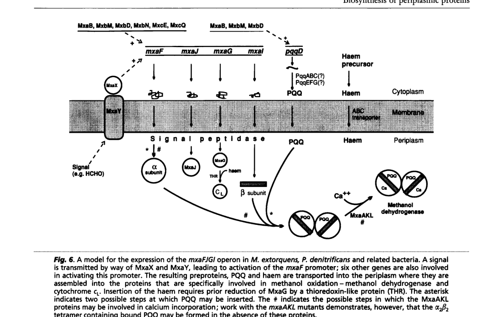

mxaJ (also known as moxJ) encodes a periplasmic accessory protein within the mxa methanol-oxidation operon (mxaFJGI...) of Methylorubrum extorquens AM1. It is exported to the periplasm via an N-terminal signal peptide (residues 1-25) and was long proposed to act either as a third subunit of methanol dehydrogenase (MDH) or as a molecular chaperone required for MDH assembly. Recent structural/biochemical work resolved this question: MxaJ is an MDH assembly chaperone that binds the folded catalytic subunit MxaF, forms an MxaF/MxaJ intermediate, and promotes incorporation of the PQQ cofactor during MDH maturation; once PQQ is loaded, engagement of MxaI displaces MxaJ to yield the mature PQQ-loaded MxaF/MxaI complex. MxaJ does not form part of the finished MDH complex. It belongs to the family 3 solute-binding-protein-like fold and has a paralog, XoxJ, that plays an analogous accessory role for the lanthanide-dependent XoxF system. mxaJ is co-regulated with the rest of the mxa operon and is strongly repressed when lanthanides trigger the "lanthanide switch" to the Xox system, consistent with its specific role in the calcium-dependent branch of periplasmic methanol oxidation.
| GO Term | Evidence | Action | Reason |
|---|---|---|---|
|
GO:0015945
methanol metabolic process
|
IEA
GO_REF:0000043 |
KEEP AS NON CORE |
Summary: KEEP_AS_NON_CORE. MxaJ is required for biogenesis of active methanol dehydrogenase and is a co-regulated component of the methanol-oxidation (mxa) system, so participation in methanol metabolism is well supported, but this broad term is subsumed by the more specific methanol catabolic process (GO:0046170) used as the core process term.
Reason: Recent structural work establishes MxaJ as an MDH assembly chaperone that promotes PQQ incorporation into the catalytic MxaF subunit, placing it firmly within methanol metabolism. This broader term is correct but less informative than methanol catabolic process (GO:0046170), which is the more specific catabolism term and is retained as the core process; GO:0015945 is therefore kept as non-core.
Supporting Evidence:
file:METEA/mxaJ/mxaJ-uniprot.txt
FUNCTION: May be involved in the assemblage of active methanol
file:METEA/mxaJ/mxaJ-deep-research-falcon.md
MxaJ is an MDH assembly chaperone that mediates PQQ incorporation
|
|
GO:0042597
periplasmic space
|
IEA
GO_REF:0000120 |
ACCEPT |
Summary: ACCEPT. MxaJ is an exported precursor protein that functions in the periplasm, where PQQ-dependent MDH assembles.
Reason: Periplasmic localization is supported by the UniProt signal peptide and SUBCELLULAR LOCATION annotation and by literature describing mxaJ as encoding a periplasmic precursor. The export pathway (Tat vs Sec) is not experimentally resolved for AM1 MxaJ.
Supporting Evidence:
file:METEA/mxaJ/mxaJ-uniprot.txt
SUBCELLULAR LOCATION: Periplasm
file:METEA/mxaJ/mxaJ-deep-research-falcon.md
prediction that *mxaJ* encodes a **periplasmic precursor** protein
|
|
GO:0046170
methanol catabolic process
|
IEA
GO_REF:0000002 |
ACCEPT |
Summary: ACCEPT. This is the most specific applicable process term: MxaJ enables catabolism of methanol by maturing the periplasmic MDH that performs the first oxidation step.
Reason: MxaJ is an accessory factor in the periplasmic methanol oxidation module; its chaperone role in producing active MxaFI directly supports methanol catabolism. This term is preferred over the broader GO:0015945.
Supporting Evidence:
file:METEA/mxaJ/mxaJ-uniprot.txt
dehydrogenase and/or its cofactor PQQ in the periplasm.
file:METEA/mxaJ/mxaJ-deep-research-falcon.md
accessory factor in periplasmic methanol oxidation module
|
|
GO:0044183
protein folding chaperone
|
NAS | NEW |
Summary: NEW (best-available MF; imperfect fit). Replaces the uninformative root term binding (GO:0005488) with a chaperone-class molecular function. MxaJ is an assembly/maturation chaperone: it binds the ALREADY-FOLDED MxaF client and promotes PQQ-cofactor incorporation during MDH maturation. It does NOT fold MxaF, so GO:0044183 is used only as the closest existing MF term pending a more precise one.
Reason: Generic binding (GO:0005488) provides no functional information. Zhou et al. 2025 show that MxaJ binds the folded catalytic subunit MxaF, forms an MxaF/MxaJ intermediate, and promotes incorporation of the PQQ cofactor, then is released upon MxaI engagement. IMPORTANT CAVEAT: GO:0044183 (protein folding chaperone) is an IMPERFECT fit. Its definition and curator note specify a chaperone that "binds an unfolded protein to fold it"; MxaJ instead acts on the already-folded MxaF and is an ASSEMBLY/MATURATION (cofactor-incorporation) chaperone, not a folding chaperone. An OLS survey of MF chaperone terms found no better existing term: metallochaperone activity (GO:0016530) is restricted to metal-ion delivery (PQQ is an organic cofactor, not a metal), unfolded protein holdase activity (GO:0140309) requires an unfolded client, and no generic "assembly chaperone" or "cofactor-incorporation chaperone" MF term exists. GO:0044183 is therefore retained as the best available chaperone-class MF descriptor pending a more precise term; the assembly process itself is captured by chaperone-mediated protein complex assembly (GO:0051131). This MF should be revisited if/when a more specific assembly/maturation chaperone MF term is added to GO.
Supporting Evidence:
file:METEA/mxaJ/mxaJ-deep-research-falcon.md
it binds folded **MxaF**, forms an **MxaF/MxaJ** intermediate, and promotes **PQQ incorporation** during MDH maturation
|
|
GO:0051131
chaperone-mediated protein complex assembly
|
NAS | NEW |
Summary: NEW. Captures the biological process MxaJ performs: it chaperones assembly of the mature MxaF/MxaI methanol dehydrogenase complex by promoting PQQ incorporation, then is released and is not part of the finished complex.
Reason: Zhou et al. 2025 show MxaJ binds MxaF, promotes PQQ entry, and is displaced upon MxaI engagement to yield mature PQQ-loaded MxaF/MxaI. This matches the definition of chaperone-mediated protein complex assembly (assembly mediated by chaperone molecules that do not form part of the finished complex) and is more mechanistically precise than the broad methanol-metabolism process terms alone.
Supporting Evidence:
file:METEA/mxaJ/mxaJ-deep-research-falcon.md
After PQQ binding, **MxaI engagement** promotes **MxaJ release**
|
Q: Is MxaJ exported to the periplasm via the Tat or the Sec pathway? The N-terminal signal peptide is annotated but the export route has not been experimentally resolved for M. extorquens AM1 MxaJ, and Tat vs Sec has mechanistic implications (folded vs unfolded transport) given that MxaJ engages already-folded MxaF.
Q: What is the phenotype of a clean, non-polar mxaJ deletion in M. extorquens AM1 (e.g. methanol growth, MDH activity, MxaF/MxaI complex assembly and PQQ loading)? A direct knockout, controlled for polar effects on the downstream mxaG/mxaI genes, would confirm the proposed assembly-chaperone role and quantify its contribution to MDH maturation.
The research report should be a detailed narrative explaining the function, biological processes, and localization of the gene product. Citations should be given for all claims.
You should prioritize authoritative reviews and primary scientific literature when conducting research. You can supplement
this with annotations you find in gene/protein databases, but these can be outdated or inaccurate.
We are specifically interested in the primary function of the gene - for enzymes, what reaction is catalyzed, and what is the substrate specificity? For transporters, what is the substrate? For structural proteins or adapters, what is the broader structural role? For signaling molecules, what is the role in the pathway.
We are interested in where in or outside the cell the gene product carries out its function.
We are also interested in the signaling or biochemical pathways in which the gene functions. We are less interested in broad pleiotropic effects, except where these elucidate the precise role.
Include evidence where possible. We are interested in both experimental evidence as well as inference from structure, evolution, or bioinformatic analysis. Precise studies should be prioritized over high-throughput, where available.
The target is Protein MoxJ (precursor) encoded by moxJ (synonym mxaJ) from Methylorubrum extorquens strain AM1 (formerly Methylobacterium extorquens AM1), UniProt P16028. In the accessible literature, mxaJ/moxJ is consistently discussed as an accessory gene within the canonical mxa methanol-oxidation operon (mxaFJGIRSACKLDEHB), adjacent to the catalytic MDH subunit gene mxaF and the cytochrome electron-acceptor gene mxaG, matching the UniProt context provided. (goodwin1995thebiosynthesisof pages 5-7, goodwin1995thebiosynthesisof pages 4-5, schmidt2010functionalinvestigationof pages 37-39)
In M. extorquens AM1, methylotrophic growth begins with periplasmic oxidation of methanol, classically by PQQ-dependent methanol dehydrogenase (MDH) (MxaFI), transferring electrons to a periplasmic cytochrome cL (MxaG). The mxa operon encodes not only catalytic subunits but also accessory proteins required for MDH biogenesis and function in the periplasm. (goodwin1995thebiosynthesisof pages 4-5, schmidt2010functionalinvestigationof pages 39-45)
Historically, MxaJ was described as a predicted ~30 kDa periplasmic precursor protein with uncertain role, proposed either as a third MDH subunit or a molecular chaperone required for assembly/optimal in vivo function of MDH. (goodwin1995thebiosynthesisof pages 4-5, goodwin1995thebiosynthesisof pages 5-7)
A later comparative genomic/protein-family interpretation classifies MxaJ/XoxJ-like proteins as Family 3 extracellular solute-binding proteins (COG0834; Pfam family reported in that context), suggesting a solute-binding-protein-like fold and raising hypotheses such as binding methanol or facilitating formaldehyde release/detoxification (hypotheses; not direct AM1 biochemical proof). (wu2015xoxftypemethanoldehydrogenase pages 8-12)
Periplasmic localization is supported by: (i) prediction that mxaJ encodes a periplasmic precursor protein; and (ii) the broader model that MDH structural gene products carry signal sequences that are cleaved upon translocation to the periplasm, where PQQ/haem-containing complexes assemble. (goodwin1995thebiosynthesisof pages 4-5, goodwin1995thebiosynthesisof pages 5-7)
Export pathway (Tat vs Sec): the accessible papers used here support periplasmic export but do not directly determine whether AM1 MoxJ uses Tat vs Sec machinery; thus, Tat assignment (even if present in UniProt features) should be treated as database-based unless validated by targeted experiments. (goodwin1995thebiosynthesisof pages 4-5)
The strongest mechanistic evidence currently available in the retrieved corpus is that MxaJ is an MDH assembly chaperone that mediates PQQ incorporation into the catalytic subunit MxaF. Zhou et al. (Nature Communications, 2025-07, https://doi.org/10.1038/s41467-025-61958-w) reconstructed an MDH assembly system and captured intermediate complexes, concluding that:
- MxaJ forms an MxaF/MxaJ complex and promotes conformational changes enabling PQQ entry/incorporation.
- After PQQ binding, MxaI engagement promotes MxaJ release, yielding mature PQQ-loaded MxaF/MxaI complexes.
This provides a direct biochemical/structural basis for the long-standing “assembly protein / periplasmic chaperone” hypothesis for MxaJ-family proteins. (zhou2025decipheringtheassembly pages 4-5, zhou2025decipheringtheassembly pages 1-2)
Genomic context places mxaJ directly adjacent to mxaF and mxaG within the mxa cluster, which encodes the periplasmic methanol oxidation module. This operon architecture supports a role for MxaJ in the biogenesis/activation of the periplasmic MDH system rather than downstream cytosolic C1 assimilation. (schmidt2010functionalinvestigationof pages 39-45, goodwin1995thebiosynthesisof pages 5-7)
Direct physical interactions of AM1 MxaJ with MxaG or the assembled MDH complex are not demonstrated in the accessible AM1-specific primary evidence here; however, related systems and models depict periplasmic co-assembly of exported proteins with cofactors. (goodwin1995thebiosynthesisof media 8f8bf987, goodwin1995thebiosynthesisof pages 4-5)
In M. extorquens AM1, lanthanides (e.g., La3+) induce a regulatory “lanthanide switch” favoring lanthanide-dependent alcohol dehydrogenases (Xox systems) and repressing the Ca-dependent mxa system.
RNA-seq under methanol growth with 2 µM La3+ (FDR < 0.15; |log2FC| > 1) shows mxaJ is strongly downregulated (log2FC = −7.5, p = 2.00E−18), together with other mxa genes (e.g., mxaF −8.0; mxaG −7.4). (Scientific Reports, 2019-03, https://doi.org/10.1038/s41598-019-41043-1) (good2019contrastinginvitro pages 7-8)
In the same dataset, the xox1 locus (including xoxJ, an MxaJ-like homolog) is upregulated in the presence of La3+ (reported ~16–21-fold; with example log2 values: xoxJ ~ 4.0). (good2019contrastinginvitro pages 6-7)
Although direct AM1 mxaJ knockout phenotype data were not retrieved here, xoxJ (MxaJ-like homolog) mutants show strong growth impairments under methanol + La3+ conditions in AM1: for example, one dataset reports xoxJ growth at 0.04 ± 0.01 h−1 on methanol + La3+ with a long lag, compared with higher rates on methanol without La3+. (Scientific Reports, 2020-07, https://doi.org/10.1038/s41598-020-69401-4) (roszczenkojasinska2020geneproductsand pages 6-7)
This supports functional importance of MxaJ-like proteins across alternative periplasmic PQQ-ADH modules, consistent with a conserved maturation/activation role. (roszczenkojasinska2020geneproductsand pages 4-5)
A separate AM1 study reports that adding lanthanum increases methanol-growth rate by ~9–12%, consistent with a switch to lanthanide-dependent periplasmic dehydrogenases while repressing the mxa system. (Scientific Reports, 2019-03, https://doi.org/10.1038/s41598-019-41043-1) (good2019contrastinginvitro pages 1-2)
Older biochemical/genetic synthesis notes predict an MxaJ precursor of ~30 kDa, and report isolation of a ~32 kDa protein in a related methylotroph whose N-terminus matched the predicted mxaJ product, supporting that MxaJ-family proteins are small exported periplasmic factors. (Microbiology, 1995-05, https://doi.org/10.1099/13500872-141-5-1051) (goodwin1995thebiosynthesisof pages 5-7)
Direct 2023–2024 AM1-specific mechanistic studies of MoxJ/MxaJ were not retrieved in the accessible corpus. However, multiple 2024 results strongly update the context for MxaJ-like proteins in methanol oxidation systems:
A 2024 metagenomics study of weathered granite/soils found that lanthanide-dependent XoxF-type methanol dehydrogenase systems are widespread and that XoxF gene clusters commonly include accessory/electron-transfer genes such as xoxJ and xoxG (MxaJ/MxaG homologs), indicating that MxaJ-like accessory proteins are broadly conserved features of periplasmic PQQ-ADH methanol-oxidation modules in nature. (BMC Biology, 2024-02, https://doi.org/10.1186/s12915-024-01841-0) (voutsinos2024weatheredgranitesand pages 4-7, voutsinos2024weatheredgranitesand pages 1-2)
The same 2024 work reports lanthanide concentrations across weathering gradients (e.g., 427 ppm in lightly weathered granite declining to 214 ppm in highly weathered granite and 80 ppm in soil) and recovers 411 XoxF-type MDH sequences (dominated by XoxF3) while not detecting Ca-dependent MxaF sequences in the reconstructed genomes. These data strengthen the view that lanthanide-dependent PQQ-ADH systems (with accessory xoxJ) can be ecologically dominant. (voutsinos2024weatheredgranitesand pages 7-10, voutsinos2024weatheredgranitesand pages 2-4)
M. extorquens AM1 is widely used as a platform methylotroph for C1-based biotechnological approaches. Efficient methanol oxidation depends on functional periplasmic PQQ-ADH systems. Because MxaJ is now mechanistically linked to PQQ incorporation into MxaF (a key maturation step), it is a credible engineering target for:
- heterologous reconstruction of active MDH systems,
- improving robustness of methanol oxidation modules,
- enabling controlled switching between Ca-dependent and lanthanide-dependent pathways (via xoxJ-like modules).
This application logic is specifically supported by the demonstration that MxaJ enables PQQ loading during MDH maturation (reconstructed in a heterologous system). (zhou2025decipheringtheassembly pages 1-2)
Goodwin & Anthony (Microbiology, 1995-05, https://doi.org/10.1099/13500872-141-5-1051) summarize evidence and propose two models: MxaJ as a component (“third subunit”) of MDH, or as a molecular chaperone essential for assembly of active MDH; they did not resolve which model is correct at the time. (goodwin1995thebiosynthesisof pages 4-5)
Zhou et al. (Nature Communications, 2025-07, https://doi.org/10.1038/s41467-025-61958-w) provide direct structural and mechanistic evidence supporting the chaperone-mediated PQQ incorporation model, resolving a long-standing question about MxaJ-family proteins. (zhou2025decipheringtheassembly pages 4-5, zhou2025decipheringtheassembly pages 1-2)
Goodwin & Anthony provide an operon/assembly model figure showing exported preproteins and periplasmic assembly of the methanol-oxidation module including the mxaFJGI region; cropped figure/table images were retrieved from that paper. (goodwin1995thebiosynthesisof media 8f8bf987, goodwin1995thebiosynthesisof media 3fbdfcda, goodwin1995thebiosynthesisof media 440826dc, goodwin1995thebiosynthesisof media 75627ce3)
| Feature | Evidence summary | Key citations (with year) |
|---|---|---|
| Gene names / target identity | The literature for Methylorubrum/Methylobacterium extorquens AM1 uses mxaJ and moxJ for the same methanol-oxidation accessory gene in the canonical mxa cluster; Schmidt et al. discuss MxaJ and its paralog XoxJ in analogous loci, supporting that UniProt P16028 corresponds to the AM1 methanol-oxidation accessory protein rather than an unrelated gene symbol in another organism. | Goodwin & Anthony 1995 (goodwin1995thebiosynthesisof pages 5-7, goodwin1995thebiosynthesisof pages 4-5); Schmidt et al. 2010 (schmidt2010functionalinvestigationof pages 37-39, schmidt2010functionalinvestigationof pages 87-92, schmidt2010functionalinvestigationof pages 39-45) |
| Operon / pathway context | mxaJ is located in the mxaF-mxaJ-mxaG-mxaI region within the larger methanol-oxidation operon (mxaFJGIRSACKLDEHB). This places MxaJ directly alongside the catalytic MDH subunits (MxaF/MxaI) and the electron acceptor cytochrome cL (MxaG), consistent with a role in MDH biogenesis or function in periplasmic methanol oxidation. | Goodwin & Anthony 1995 (goodwin1995thebiosynthesisof pages 5-7, goodwin1995thebiosynthesisof pages 4-5, goodwin1995thebiosynthesisof media 8f8bf987); Schmidt et al. 2010 (schmidt2010functionalinvestigationof pages 37-39, schmidt2010functionalinvestigationof pages 87-92, schmidt2010functionalinvestigationof pages 39-45) |
| Predicted localization / export | Goodwin & Anthony describe mxaJ as encoding a precursor of a periplasmic protein and state that structural-gene products carry signal sequences cleaved upon translocation to the periplasm. Figure/model context shows preproteins entering the periplasm for assembly. The available snippets do not directly establish whether MxaJ uses Tat versus Sec export, so export-pathway assignment remains uncertain from the provided literature evidence alone. | Goodwin & Anthony 1995 (goodwin1995thebiosynthesisof pages 5-7, goodwin1995thebiosynthesisof pages 4-5, goodwin1995thebiosynthesisof media 8f8bf987) |
| Molecular weight | Historical review evidence describes the predicted MxaJ precursor as ~30 kDa; a ~32 kDa protein isolated from Acetobacter methanolicus had an N-terminus matching the predicted mxaJ product, supporting a small exported accessory-protein assignment. | Goodwin & Anthony 1995 (goodwin1995thebiosynthesisof pages 5-7) |
| Domain / family assignment | Older review literature reported no significant homology to known proteins at that time, but later sequence analysis classified MxaJ/XoxJ-like proteins as Family 3 extracellular solute-binding proteins. This aligns broadly with modern database/domain assignments of MoxJ/MxaJ as a solute-binding-protein-like accessory factor, although the provided snippets do not directly test ligand binding. | Goodwin & Anthony 1995 (goodwin1995thebiosynthesisof pages 4-5); Wu et al. 2015 (wu2015xoxftypemethanoldehydrogenase pages 8-12) |
| Proposed function (historical view) | Before direct structural evidence, MxaJ was proposed either as a third subunit of methanol dehydrogenase or as a molecular chaperone / assembly protein required for formation or optimal in vivo function of MDH. Schmidt et al. reiterate that MxaJ/XoxJ had been suggested to be an assembly protein or periplasmic chaperone. | Goodwin & Anthony 1995 (goodwin1995thebiosynthesisof pages 5-7, goodwin1995thebiosynthesisof pages 4-5); Schmidt et al. 2010 (schmidt2010functionalinvestigationof pages 37-39, schmidt2010functionalinvestigationof pages 87-92, schmidt2010functionalinvestigationof pages 39-45) |
| Current mechanistic understanding | Recent structural work shows MxaJ functions as an MDH assembly chaperone: it binds folded MxaF, forms an MxaF/MxaJ intermediate, and promotes PQQ incorporation during MDH maturation. After PQQ loading, MxaI engages and helps displace MxaJ, yielding mature PQQ-loaded MxaF/MxaI. This is the strongest currently available mechanistic evidence in the provided set. | Zhou et al. 2025 (zhou2025decipheringtheassembly pages 4-5, zhou2025decipheringtheassembly pages 1-2) |
| Relation to XoxJ / ExaJ paralogs | AM1 and related methylotrophs often encode xoxJ/exaJ homologs next to alternative alcohol dehydrogenase genes. Roszczenko-Jasińska et al. note that xoxF/exaF loci often contain mxaJ homologs, while Schmidt et al. describe xoxJ as corresponding to the putative periplasmic chaperone/assembly role of MxaJ. This supports a conserved accessory role across Ca-dependent and lanthanide-associated MDH-like systems. | Schmidt et al. 2010 (schmidt2010functionalinvestigationof pages 87-92, schmidt2010functionalinvestigationof pages 39-45); Roszczenko-Jasińska et al. 2020 (schmidt2010functionalinvestigationof pages 37-39) |
| Evidence gaps / uncertainty | The provided snippets do not supply clear AM1-specific mxaJ knockout phenotype data, direct biochemical measurements of MxaJ interaction with MxaG, or direct demonstration of Tat export for AM1 MxaJ. Thus, periplasmic accessory/chaperone function is well supported, but some annotation details remain inferential or await more direct AM1-specific experiments in the accessible evidence set. | Goodwin & Anthony 1995 (goodwin1995thebiosynthesisof pages 5-7, goodwin1995thebiosynthesisof pages 4-5); Schmidt et al. 2010 (schmidt2010functionalinvestigationof pages 87-92, schmidt2010functionalinvestigationof pages 39-45); Zhou et al. 2025 (zhou2025decipheringtheassembly pages 1-2) |
Table: This table condenses the evidence-supported functional annotation for MoxJ/MxaJ (UniProt P16028) in Methylorubrum extorquens AM1. It highlights what is directly supported by the cited literature and explicitly marks remaining evidence gaps such as export-pathway uncertainty and limited AM1-specific mutant data.
References
(goodwin1995thebiosynthesisof pages 5-7): Pat M. Goodwin and Christopher Anthony. The biosynthesis of periplasmic electron transport proteins in methylotrophic bacteria. Microbiology, 141 ( Pt 5):1051-64, May 1995. URL: https://doi.org/10.1099/13500872-141-5-1051, doi:10.1099/13500872-141-5-1051. This article has 39 citations and is from a peer-reviewed journal.
(goodwin1995thebiosynthesisof pages 4-5): Pat M. Goodwin and Christopher Anthony. The biosynthesis of periplasmic electron transport proteins in methylotrophic bacteria. Microbiology, 141 ( Pt 5):1051-64, May 1995. URL: https://doi.org/10.1099/13500872-141-5-1051, doi:10.1099/13500872-141-5-1051. This article has 39 citations and is from a peer-reviewed journal.
(schmidt2010functionalinvestigationof pages 37-39): Sabrina Schmidt, Philipp Christen, Patrick Kiefer, and Julia A. Vorholt. Functional investigation of methanol dehydrogenase-like protein xoxf in methylobacterium extorquens am1. Microbiology, 156 Pt 8:2575-86, Aug 2010. URL: https://doi.org/10.1099/mic.0.038570-0, doi:10.1099/mic.0.038570-0. This article has 141 citations and is from a peer-reviewed journal.
(schmidt2010functionalinvestigationof pages 39-45): Sabrina Schmidt, Philipp Christen, Patrick Kiefer, and Julia A. Vorholt. Functional investigation of methanol dehydrogenase-like protein xoxf in methylobacterium extorquens am1. Microbiology, 156 Pt 8:2575-86, Aug 2010. URL: https://doi.org/10.1099/mic.0.038570-0, doi:10.1099/mic.0.038570-0. This article has 141 citations and is from a peer-reviewed journal.
(wu2015xoxftypemethanoldehydrogenase pages 8-12): Ming L. Wu, Hans J. C. T. Wessels, Arjan Pol, Huub J. M. Op den Camp, Mike S. M. Jetten, Laura van Niftrik, and Jan T. Keltjens. Xoxf-type methanol dehydrogenase from the anaerobic methanotroph “candidatus methylomirabilis oxyfera”. Applied and Environmental Microbiology, 81:1442-1451, Feb 2015. URL: https://doi.org/10.1128/aem.03292-14, doi:10.1128/aem.03292-14. This article has 81 citations and is from a peer-reviewed journal.
(zhou2025decipheringtheassembly pages 4-5): Haichuan Zhou, Junqing Sun, Jian Cheng, Min Wu, Jie Bai, Qian Li, Jie Shen, Manman Han, Chen Yang, Liangpo Li, Yuwan Liu, Qichen Cao, Weidong Liu, Haixia Xiao, Hongjun Dong, Feng Gao, and Huifeng Jiang. Deciphering the assembly process of pqq dependent methanol dehydrogenase. Nature Communications, Jul 2025. URL: https://doi.org/10.1038/s41467-025-61958-w, doi:10.1038/s41467-025-61958-w. This article has 6 citations and is from a highest quality peer-reviewed journal.
(zhou2025decipheringtheassembly pages 1-2): Haichuan Zhou, Junqing Sun, Jian Cheng, Min Wu, Jie Bai, Qian Li, Jie Shen, Manman Han, Chen Yang, Liangpo Li, Yuwan Liu, Qichen Cao, Weidong Liu, Haixia Xiao, Hongjun Dong, Feng Gao, and Huifeng Jiang. Deciphering the assembly process of pqq dependent methanol dehydrogenase. Nature Communications, Jul 2025. URL: https://doi.org/10.1038/s41467-025-61958-w, doi:10.1038/s41467-025-61958-w. This article has 6 citations and is from a highest quality peer-reviewed journal.
(goodwin1995thebiosynthesisof media 8f8bf987): Pat M. Goodwin and Christopher Anthony. The biosynthesis of periplasmic electron transport proteins in methylotrophic bacteria. Microbiology, 141 ( Pt 5):1051-64, May 1995. URL: https://doi.org/10.1099/13500872-141-5-1051, doi:10.1099/13500872-141-5-1051. This article has 39 citations and is from a peer-reviewed journal.
(good2019contrastinginvitro pages 7-8): Nathan M. Good, Riley S. Moore, Carly J. Suriano, and N. Cecilia Martinez-Gomez. Contrasting in vitro and in vivo methanol oxidation activities of lanthanide-dependent alcohol dehydrogenases xoxf1 and exaf from methylobacterium extorquens am1. Scientific Reports, Mar 2019. URL: https://doi.org/10.1038/s41598-019-41043-1, doi:10.1038/s41598-019-41043-1. This article has 92 citations and is from a peer-reviewed journal.
(good2019contrastinginvitro pages 6-7): Nathan M. Good, Riley S. Moore, Carly J. Suriano, and N. Cecilia Martinez-Gomez. Contrasting in vitro and in vivo methanol oxidation activities of lanthanide-dependent alcohol dehydrogenases xoxf1 and exaf from methylobacterium extorquens am1. Scientific Reports, Mar 2019. URL: https://doi.org/10.1038/s41598-019-41043-1, doi:10.1038/s41598-019-41043-1. This article has 92 citations and is from a peer-reviewed journal.
(roszczenkojasinska2020geneproductsand pages 6-7): Paula Roszczenko-Jasińska, Huong N. Vu, Gabriel A. Subuyuj, Ralph Valentine Crisostomo, James Cai, Nicholas F. Lien, Erik J. Clippard, Elena M. Ayala, Richard T. Ngo, Fauna Yarza, Justin P. Wingett, Charumathi Raghuraman, Caitlin A. Hoeber, Norma C. Martinez-Gomez, and Elizabeth Skovran. Gene products and processes contributing to lanthanide homeostasis and methanol metabolism in methylorubrum extorquens am1. Scientific Reports, Jul 2020. URL: https://doi.org/10.1038/s41598-020-69401-4, doi:10.1038/s41598-020-69401-4. This article has 98 citations and is from a peer-reviewed journal.
(roszczenkojasinska2020geneproductsand pages 4-5): Paula Roszczenko-Jasińska, Huong N. Vu, Gabriel A. Subuyuj, Ralph Valentine Crisostomo, James Cai, Nicholas F. Lien, Erik J. Clippard, Elena M. Ayala, Richard T. Ngo, Fauna Yarza, Justin P. Wingett, Charumathi Raghuraman, Caitlin A. Hoeber, Norma C. Martinez-Gomez, and Elizabeth Skovran. Gene products and processes contributing to lanthanide homeostasis and methanol metabolism in methylorubrum extorquens am1. Scientific Reports, Jul 2020. URL: https://doi.org/10.1038/s41598-020-69401-4, doi:10.1038/s41598-020-69401-4. This article has 98 citations and is from a peer-reviewed journal.
(good2019contrastinginvitro pages 1-2): Nathan M. Good, Riley S. Moore, Carly J. Suriano, and N. Cecilia Martinez-Gomez. Contrasting in vitro and in vivo methanol oxidation activities of lanthanide-dependent alcohol dehydrogenases xoxf1 and exaf from methylobacterium extorquens am1. Scientific Reports, Mar 2019. URL: https://doi.org/10.1038/s41598-019-41043-1, doi:10.1038/s41598-019-41043-1. This article has 92 citations and is from a peer-reviewed journal.
(voutsinos2024weatheredgranitesand pages 4-7): Marcos Y. Voutsinos, Jacob A. West-Roberts, Rohan Sachdeva, John W. Moreau, and Jillian F. Banfield. Weathered granites and soils harbour microbes with lanthanide-dependent methylotrophic enzymes. BMC Biology, Feb 2024. URL: https://doi.org/10.1186/s12915-024-01841-0, doi:10.1186/s12915-024-01841-0. This article has 13 citations and is from a domain leading peer-reviewed journal.
(voutsinos2024weatheredgranitesand pages 1-2): Marcos Y. Voutsinos, Jacob A. West-Roberts, Rohan Sachdeva, John W. Moreau, and Jillian F. Banfield. Weathered granites and soils harbour microbes with lanthanide-dependent methylotrophic enzymes. BMC Biology, Feb 2024. URL: https://doi.org/10.1186/s12915-024-01841-0, doi:10.1186/s12915-024-01841-0. This article has 13 citations and is from a domain leading peer-reviewed journal.
(voutsinos2024weatheredgranitesand pages 7-10): Marcos Y. Voutsinos, Jacob A. West-Roberts, Rohan Sachdeva, John W. Moreau, and Jillian F. Banfield. Weathered granites and soils harbour microbes with lanthanide-dependent methylotrophic enzymes. BMC Biology, Feb 2024. URL: https://doi.org/10.1186/s12915-024-01841-0, doi:10.1186/s12915-024-01841-0. This article has 13 citations and is from a domain leading peer-reviewed journal.
(voutsinos2024weatheredgranitesand pages 2-4): Marcos Y. Voutsinos, Jacob A. West-Roberts, Rohan Sachdeva, John W. Moreau, and Jillian F. Banfield. Weathered granites and soils harbour microbes with lanthanide-dependent methylotrophic enzymes. BMC Biology, Feb 2024. URL: https://doi.org/10.1186/s12915-024-01841-0, doi:10.1186/s12915-024-01841-0. This article has 13 citations and is from a domain leading peer-reviewed journal.
(goodwin1995thebiosynthesisof media 3fbdfcda): Pat M. Goodwin and Christopher Anthony. The biosynthesis of periplasmic electron transport proteins in methylotrophic bacteria. Microbiology, 141 ( Pt 5):1051-64, May 1995. URL: https://doi.org/10.1099/13500872-141-5-1051, doi:10.1099/13500872-141-5-1051. This article has 39 citations and is from a peer-reviewed journal.
(goodwin1995thebiosynthesisof media 440826dc): Pat M. Goodwin and Christopher Anthony. The biosynthesis of periplasmic electron transport proteins in methylotrophic bacteria. Microbiology, 141 ( Pt 5):1051-64, May 1995. URL: https://doi.org/10.1099/13500872-141-5-1051, doi:10.1099/13500872-141-5-1051. This article has 39 citations and is from a peer-reviewed journal.
(goodwin1995thebiosynthesisof media 75627ce3): Pat M. Goodwin and Christopher Anthony. The biosynthesis of periplasmic electron transport proteins in methylotrophic bacteria. Microbiology, 141 ( Pt 5):1051-64, May 1995. URL: https://doi.org/10.1099/13500872-141-5-1051, doi:10.1099/13500872-141-5-1051. This article has 39 citations and is from a peer-reviewed journal.
(schmidt2010functionalinvestigationof pages 87-92): Sabrina Schmidt, Philipp Christen, Patrick Kiefer, and Julia A. Vorholt. Functional investigation of methanol dehydrogenase-like protein xoxf in methylobacterium extorquens am1. Microbiology, 156 Pt 8:2575-86, Aug 2010. URL: https://doi.org/10.1099/mic.0.038570-0, doi:10.1099/mic.0.038570-0. This article has 141 citations and is from a peer-reviewed journal.
(schmidt2010functionalinvestigationof pages 61-66): Sabrina Schmidt, Philipp Christen, Patrick Kiefer, and Julia A. Vorholt. Functional investigation of methanol dehydrogenase-like protein xoxf in methylobacterium extorquens am1. Microbiology, 156 Pt 8:2575-86, Aug 2010. URL: https://doi.org/10.1099/mic.0.038570-0, doi:10.1099/mic.0.038570-0. This article has 141 citations and is from a peer-reviewed journal.

id: P16028
gene_symbol: mxaJ
product_type: PROTEIN
taxon:
id: NCBITaxon:272630
label: Methylorubrum extorquens AM1
description: >-
mxaJ (also known as moxJ) encodes a periplasmic accessory protein within the
mxa methanol-oxidation operon (mxaFJGI...) of Methylorubrum extorquens AM1. It
is exported to the periplasm via an N-terminal signal peptide (residues 1-25)
and was long proposed to act either as a third subunit of methanol
dehydrogenase (MDH) or as a molecular chaperone required for MDH assembly.
Recent structural/biochemical work resolved this question: MxaJ is an MDH
assembly chaperone that binds the folded catalytic subunit MxaF, forms an
MxaF/MxaJ intermediate, and promotes incorporation of the PQQ cofactor during
MDH maturation; once PQQ is loaded, engagement of MxaI displaces MxaJ to yield
the mature PQQ-loaded MxaF/MxaI complex. MxaJ does not form part of the
finished MDH complex. It belongs to the family 3 solute-binding-protein-like
fold and has a paralog, XoxJ, that plays an analogous accessory role for the
lanthanide-dependent XoxF system. mxaJ is co-regulated with the rest of the
mxa operon and is strongly repressed when lanthanides trigger the
"lanthanide switch" to the Xox system, consistent with its specific role in
the calcium-dependent branch of periplasmic methanol oxidation.
aliases:
- moxJ
existing_annotations:
- term:
id: GO:0015945
label: methanol metabolic process
evidence_type: IEA
original_reference_id: GO_REF:0000043
review:
summary: >-
KEEP_AS_NON_CORE. MxaJ is required for biogenesis of active methanol
dehydrogenase and is a co-regulated component of the methanol-oxidation
(mxa) system, so participation in methanol metabolism is well supported,
but this broad term is subsumed by the more specific methanol catabolic
process (GO:0046170) used as the core process term.
action: KEEP_AS_NON_CORE
reason: >-
Recent structural work establishes MxaJ as an MDH assembly chaperone
that promotes PQQ incorporation into the catalytic MxaF subunit, placing
it firmly within methanol metabolism. This broader term is correct but
less informative than methanol catabolic process (GO:0046170), which is
the more specific catabolism term and is retained as the core process;
GO:0015945 is therefore kept as non-core.
supported_by:
- reference_id: file:METEA/mxaJ/mxaJ-uniprot.txt
supporting_text: >-
FUNCTION: May be involved in the assemblage of active methanol
- reference_id: file:METEA/mxaJ/mxaJ-deep-research-falcon.md
supporting_text: >-
MxaJ is an MDH assembly chaperone that mediates PQQ incorporation
reference_section_type: OTHER
- term:
id: GO:0042597
label: periplasmic space
evidence_type: IEA
original_reference_id: GO_REF:0000120
review:
summary: >-
ACCEPT. MxaJ is an exported precursor protein that functions in the
periplasm, where PQQ-dependent MDH assembles.
action: ACCEPT
reason: >-
Periplasmic localization is supported by the UniProt signal peptide and
SUBCELLULAR LOCATION annotation and by literature describing mxaJ as
encoding a periplasmic precursor. The export pathway (Tat vs Sec) is not
experimentally resolved for AM1 MxaJ.
supported_by:
- reference_id: file:METEA/mxaJ/mxaJ-uniprot.txt
supporting_text: 'SUBCELLULAR LOCATION: Periplasm'
- reference_id: file:METEA/mxaJ/mxaJ-deep-research-falcon.md
supporting_text: >-
prediction that *mxaJ* encodes a **periplasmic precursor** protein
reference_section_type: OTHER
- term:
id: GO:0046170
label: methanol catabolic process
evidence_type: IEA
original_reference_id: GO_REF:0000002
review:
summary: >-
ACCEPT. This is the most specific applicable process term: MxaJ enables
catabolism of methanol by maturing the periplasmic MDH that performs the
first oxidation step.
action: ACCEPT
reason: >-
MxaJ is an accessory factor in the periplasmic methanol oxidation
module; its chaperone role in producing active MxaFI directly supports
methanol catabolism. This term is preferred over the broader
GO:0015945.
supported_by:
- reference_id: file:METEA/mxaJ/mxaJ-uniprot.txt
supporting_text: >-
dehydrogenase and/or its cofactor PQQ in the periplasm.
- reference_id: file:METEA/mxaJ/mxaJ-deep-research-falcon.md
supporting_text: >-
accessory factor in periplasmic methanol oxidation module
reference_section_type: OTHER
- term:
id: GO:0044183
label: protein folding chaperone
evidence_type: NAS
review:
summary: >-
NEW (best-available MF; imperfect fit). Replaces the uninformative root
term binding (GO:0005488) with a chaperone-class molecular function. MxaJ
is an assembly/maturation chaperone: it binds the ALREADY-FOLDED MxaF
client and promotes PQQ-cofactor incorporation during MDH maturation. It
does NOT fold MxaF, so GO:0044183 is used only as the closest existing MF
term pending a more precise one.
action: NEW
reason: >-
Generic binding (GO:0005488) provides no functional information. Zhou et
al. 2025 show that MxaJ binds the folded catalytic subunit MxaF, forms
an MxaF/MxaJ intermediate, and promotes incorporation of the PQQ cofactor,
then is released upon MxaI engagement. IMPORTANT CAVEAT: GO:0044183
(protein folding chaperone) is an IMPERFECT fit. Its definition and
curator note specify a chaperone that "binds an unfolded protein to fold
it"; MxaJ instead acts on the already-folded MxaF and is an
ASSEMBLY/MATURATION (cofactor-incorporation) chaperone, not a folding
chaperone. An OLS survey of MF chaperone terms found no better existing
term: metallochaperone activity (GO:0016530) is restricted to metal-ion
delivery (PQQ is an organic cofactor, not a metal), unfolded protein
holdase activity (GO:0140309) requires an unfolded client, and no generic
"assembly chaperone" or "cofactor-incorporation chaperone" MF term exists.
GO:0044183 is therefore retained as the best available chaperone-class MF
descriptor pending a more precise term; the assembly process itself is
captured by chaperone-mediated protein complex assembly (GO:0051131).
This MF should be revisited if/when a more specific assembly/maturation
chaperone MF term is added to GO.
supported_by:
- reference_id: file:METEA/mxaJ/mxaJ-deep-research-falcon.md
supporting_text: >-
it binds folded **MxaF**, forms an **MxaF/MxaJ** intermediate, and
promotes **PQQ incorporation** during MDH maturation
reference_section_type: OTHER
- term:
id: GO:0051131
label: chaperone-mediated protein complex assembly
evidence_type: NAS
review:
summary: >-
NEW. Captures the biological process MxaJ performs: it chaperones
assembly of the mature MxaF/MxaI methanol dehydrogenase complex by
promoting PQQ incorporation, then is released and is not part of the
finished complex.
action: NEW
reason: >-
Zhou et al. 2025 show MxaJ binds MxaF, promotes PQQ entry, and is
displaced upon MxaI engagement to yield mature PQQ-loaded MxaF/MxaI.
This matches the definition of chaperone-mediated protein complex
assembly (assembly mediated by chaperone molecules that do not form
part of the finished complex) and is more mechanistically precise than
the broad methanol-metabolism process terms alone.
supported_by:
- reference_id: file:METEA/mxaJ/mxaJ-deep-research-falcon.md
supporting_text: >-
After PQQ binding, **MxaI engagement** promotes **MxaJ release**
reference_section_type: OTHER
core_functions:
- description: >-
MxaJ is a periplasmic MDH assembly chaperone. It binds the folded
catalytic subunit MxaF, forms an MxaF/MxaJ intermediate, and promotes
incorporation of the PQQ cofactor during maturation of the calcium- and
PQQ-dependent methanol dehydrogenase (MxaFI); engagement of MxaI then
displaces MxaJ to yield the mature PQQ-loaded MxaF/MxaI complex, of which
MxaJ is not a part. The protein is exported to the periplasm via an
N-terminal signal peptide and adopts a family 3 solute-binding-protein-like
fold. MxaJ is encoded within the mxa operon adjacent to mxaF/mxaG/mxaI and
is specifically required for the calcium-dependent branch of periplasmic
methanol oxidation; its paralog XoxJ performs the analogous role for the
lanthanide-dependent XoxF system.
molecular_function:
id: GO:0044183
label: protein folding chaperone
directly_involved_in:
- id: GO:0051131
label: chaperone-mediated protein complex assembly
- id: GO:0046170
label: methanol catabolic process
locations:
- id: GO:0042597
label: periplasmic space
supported_by:
- reference_id: file:METEA/mxaJ/mxaJ-uniprot.txt
supporting_text: >-
FUNCTION: May be involved in the assemblage of active methanol
- reference_id: file:METEA/mxaJ/mxaJ-deep-research-falcon.md
supporting_text: >-
MxaJ functions as an MDH assembly chaperone
reference_section_type: OTHER
- reference_id: file:METEA/mxaJ/mxaJ-deep-research-falcon.md
supporting_text: >-
After PQQ binding, **MxaI engagement** promotes **MxaJ release**
reference_section_type: OTHER
suggested_questions:
- question: >-
Is MxaJ exported to the periplasm via the Tat or the Sec pathway? The
N-terminal signal peptide is annotated but the export route has not been
experimentally resolved for M. extorquens AM1 MxaJ, and Tat vs Sec has
mechanistic implications (folded vs unfolded transport) given that MxaJ
engages already-folded MxaF.
- question: >-
What is the phenotype of a clean, non-polar mxaJ deletion in M. extorquens
AM1 (e.g. methanol growth, MDH activity, MxaF/MxaI complex assembly and PQQ
loading)? A direct knockout, controlled for polar effects on the
downstream mxaG/mxaI genes, would confirm the proposed assembly-chaperone
role and quantify its contribution to MDH maturation.
references:
- id: GO_REF:0000002
title: Gene Ontology annotation through association of InterPro records with
GO terms.
findings: []
- id: GO_REF:0000043
title: Gene Ontology annotation based on UniProtKB/Swiss-Prot keyword
mapping
findings: []
- id: GO_REF:0000120
title: Combined Automated Annotation using Multiple IEA Methods.
findings: []
- id: file:METEA/mxaJ/mxaJ-deep-research-falcon.md
title: Falcon deep research for mxaJ (moxJ, P16028) in Methylorubrum extorquens AM1
findings:
- supporting_text: >-
MxaJ is an MDH assembly chaperone that mediates PQQ incorporation
reference_section_type: OTHER
- supporting_text: >-
it binds folded **MxaF**, forms an **MxaF/MxaJ** intermediate, and
promotes **PQQ incorporation** during MDH maturation
reference_section_type: OTHER
- supporting_text: >-
After PQQ binding, **MxaI engagement** promotes **MxaJ release**
reference_section_type: OTHER
- supporting_text: >-
prediction that *mxaJ* encodes a **periplasmic precursor** protein
reference_section_type: OTHER
- supporting_text: >-
later sequence analysis classified MxaJ/XoxJ-like proteins as
**Family 3 extracellular solute-binding proteins**
reference_section_type: OTHER
- supporting_text: >-
mxaJ** is located in the **mxaF-mxaJ-mxaG-mxaI** region within the
larger methanol-oxidation operon
reference_section_type: OTHER
- supporting_text: >-
MxaJ as a **component (“third subunit”)** of MDH, or as a **molecular
chaperone essential for assembly**
reference_section_type: OTHER
- supporting_text: >-
mxaJ** is strongly downregulated (**log2FC = −7.5**
reference_section_type: OTHER
status: DRAFT
{kind=link}